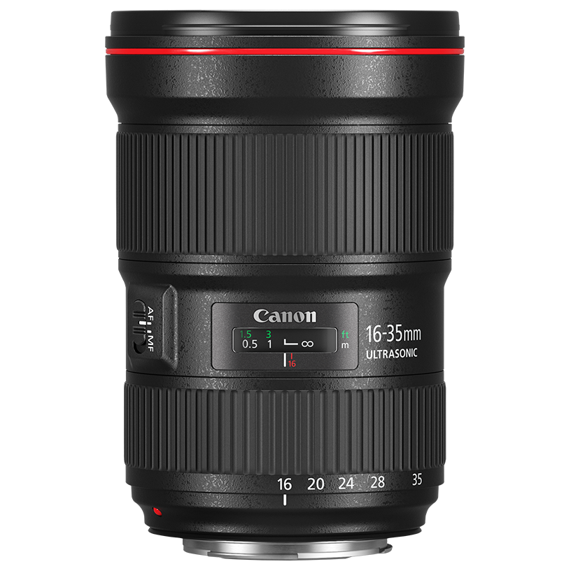

SKYTECH.LT - kompiuteriai, televizoriai, namų elektronika
- Skaitmeniniai nuotraukų rėmeliai ir fotoalbumai - kainų ...
Skaitmeniniai rėmeliai (9) Kiti rėmeliai (1) Audio / Video ir kita. Profesionali filmavimo technika (67) Vaizdo monitoriai (12) Vaizdo kameros (40) Priedai (1) Vaizdo perdavimo įranga (12) Kita įranga (2) Veiksmo kameros ir priedai (45) Mini DV kasetės (3) Optiniai adapteriai (2) - Skaitmeniniai foto rėmeliai Internetu pigiau Žema kaina ...
Susisiekite su mumis Vilniuje: 8 5 2394130 Kaune: 8 37 711296 Servisas: 8 5 2394118 vilnius@fotofoto.lt Taip pat mus rasite - Skaitmeniniai foto rėmeliai - Foto, fotografija | eFoto.lt
Skaitmeniniai rėmeliai, * Skaitmeniniai rėmeliai, foto prekės, elektroninė prekyba, internetinė parduotuvė, naujos prekės, elektronikos prekės, turizmo prekės - Skaitmeniniai foto rėmeliai - Trajektorija.lt
Nors skaitmeniniai foto rėmeliai ir nėra labai pigūs (tiesą sakant, kainos yra labai įvairios), bet jie gali pasitarnauti ne tik svečių dėmesiui patraukti, bet ir jūsų kasdienės veiklos paįvairinimui ir laisvalaikio praleidimui. Tad jei manote, jog jums toks rėmelį praverstų, nedvejokite ir įsigykite vieną iš jų. - Skaitmeniniai foto rėmeliai – kam jie skirti? – Laikas24.lt
Skaitmeniniai foto rėmeliai. RKU: 2010.09.19, 17:21 Pokalbiai: Bendri foto pokalbiai 9 . Sveiki, kilo mintis įsigyti skaitmenini foto remelį. Peržvelgus esamus pardavime iškilo daug klausimu: kokios firmos pasirinkti? Kurie yra kokybės ir kainos atžvilgiu optimaliausi? Kurių ekranai rodo tikresnes spalvas? - Skaitmeniniai rėmeliai, * Skaitmeniniai rėmeliai
Palygink skirtingų parduotuvių kainas Nuo 23.79 € Skaitmeniniai foto rėmeliai Akcijos, atsiliepimai. - Foto rėmeliai
Skaitmeniniai nuotraukų rėmeliai internetinėje parduotuvėje Senukai.lt. Didelis kokybiškų prekių pasirinkimas ir greitas užsakymas. - Nuotraukų Rėmeliai Online - LoonaPix
SKYTECH.LT Skaitmeninė technika, nešiojami kompiuteriai, plansetiniai kompiuteriai, televizoriai, namų elektronika, buitinė technika, fotoaparatai, biuro įranga - Skaitmeniniai foto rėmeliai - kainos nuo 23.79 € | Kaina24.lt
Skaitmeniniai foto rėmeliai gali rodyti vaizdą, kurio dydis labai primena populiariąsias 10×15 cm formato nuotraukas. Šį rėmelį galima statyti tiek vertikaliai, tiek ir horizontaliai, taip pat galima kabinti ant sienos, čia jau priklauso nuo kiekvieno žmogaus fantazijos, norų , poreikių, turimo interjero, turimos vietos ir kita. - Fotoalbumai ir rėmeliai - Rėmeliai - Skaitmeniniai ...
Foto efektai. Foto rėmai. Foto Menas. Veido efektai. Foto šablonai. Redaktorius. nuotraukų rėmeliai online. Iš online nuotraukų rėmeliai nauda: pridėti rėmelius nuotraukos yra turbūt lengviausias būdas padaryti vaizdo unikalus; daug juokinga pasidalinti su draugais ar šeimos įrėminti nuotrauką, nei pradinį vaizdą ...

Forumas Informacija Apie mus Rekvizitai Naudojimosi taisyklės Privatumo apsauga Atsiskaitymo būdai Administravimo mokestis Prekių pristatymas Garantinis aptarnavimas Prekių grąžinimas Prašymų nagrinėjimas Kodėl verta registruotis Paslaugos Kompiuterių remontas Akumuliatorių atnaujinimas Verslo klientams Parduotuvių tinklas Vilnius Kaunas Klaipėda Plungė Alytus E-parduotuvė Buhalterija Sveiki, prisijunkite arba užsiregistruokite! * Pastaba: tikslesnei paieškai naudokite prekių gamintojų kodus. Išplėstinė paieška › 8 700 30730 Konsultuojame I-V 9 00 - 18 00 ,VI 10 00 - 14 00 Kompiuteriai, Komponentai Nešiojami kompiuteriai / 3716 Nešiojami kompiuteriai / 1350 Krepšiai, kuprinės, dėklai / 628 Maitinimo šaltiniai / 317 Jungčių stotelės (Docking station) / 63 Priedai / 147 Atsarginės dalys / 400 Garantijos išplėtimas / 811 Planšetiniai kompiuteriai / 579 Planšetiniai kompiuteriai (Tablet) / 205 Apple iPad planšetiniai kompiuteriai / 113 Krepšiai, dėklai / 159 Planšetinių kompiuterių priedai / 102 Elektroninės skaityklės / 30 Elektroninės skaityklės / 20 Dėklai / 10 Staliniai kompiuteriai / 3357 SKY kompiuterių komplektai / 24 AiO kompiuteriai (įmontuoti monitoriuje) / 99 Firminiai kompiuteriai (Branded PC) / 2979 Darbinės stotys / 5 Plono kliento sistemos (terminalai) / 6 Kompiuterių platformos / 61 Kompiuterių stovai, laikikliai / 34 Ekrano privatumo filtrai / 94 Priedai / 55 Serveriai / 3599 Serveriai / 77 Serverių NMŠ (Rack/Tower UPS) / 338 Duomenų saugojimo sistemos / 103 Serverių komponentai / 373 Serverių spintos ir priedai / 780 Serverių programinė įranga / 21 Paslaugos ir garantijos praplėtimas / 1173 Serverių priedai / 734 Kompiuterių komponentai / 5213 Kompiuterių platformos (Barebone) / 63 Procesoriai (CPU) / 97 Pagrindinės plokštės ir priedai / 437 Aušintuvai / 540 Operatyvinė atmintis (RAM) / 863 HDD, SSD ir priedai / 1501 Optiniai įrenginiai / 57 Vaizdo plokštės ir priedai / 621 Garso Plokštės / 29 Įvesties/išvesties išplėtimo plokštės / 28 Korpusai ir priedai / 628 Maitinimo blokai / 349 Išorinės duomenų laikmenos / 1894 Diskų korpusai (HDD cases) / 231 Išoriniai standieji diskai / 375 Tinklo saugyklos, NAS / 59 Vidinių diskų stotelės / 17 Išorinių diskų priedai, dėklai / 4 Rezervinio kopijavimo įrenginiai / 7 USB flash laikmenos / 606 Flash atmintinė (kortelės) / 414 Flash kortelių skaitytuvai, priedai / 93 Media laikmenos (CD, DVD ir kt.) / 88 Kompiuterių priedai ir aksesuarai / 720 Akiniai darbui kompiuteriu / 1 Apsauga nuo vagysčių (užraktai, troseliai) / 17 Smart card (ID) skaitytuvai / 10 TV tuneriai, vaizdo apdorojimo įrenginiai / 42 Vaizdo ir garso konverteriai (Digital/Analog) / 4 Infrared ir Bluetooth ryšio adapteriai / 14 USB HUB, šakotuvai / 212 USB šviestuvai ir žaislai / 5 KVM įrenginiai ir priedai / 175 El. maitinimo Filtrai, Šakotuvai / 147 Surinkimo ir testavimo įrankiai / 10 Valikliai, Servetėlės / 83 Kabeliai, adapteriai ir priedai / 5399 Apple įrenginių kabeliai ir adapteriai / 18 Apple Lightning kabeliai ir adapteriai / 132 HDMI, DisplayPort, DVI kabeliai ir adapteriai / 906 MHL, SlimPort kabeliai ir adapteriai / 7 VGA kabeliai, adapteriai, konverteriai ir jungtys / 193 Vaizdo ir garso kabeliai, perėjimai, jungčių keitikliai / 171 Vaizdo ir garso konverteriai (Digital/Analog) / 4 Vaizdo ir garso šakotuvai, perjungėjai / 102 Vaizdo ir garso perdavimo įranga / 13 Optiniai garso kabeliai ir adapteriai / 25 USB kabeliai ir adapteriai / 986 USB į HDMI DVI DP VGA / 165 Thunderbolt kabeliai ir adapteriai / 13 Firewire kabeliai ir adapteriai / 3 COM, LPT, PS2 kabeliai ir adapteriai / 101 SATA, SATA power, SAS, IDE kabeliai / 171 Komp. vidiniai maitinimo kabeliai, adapteriai / 45 HDD Diskų pajungimo adapteriai ir priedai / 101 El. maitinimo adapteriai, kabeliai, ilgikliai / 102 Tinklo ir telefono kabeliai (UTP,Fiber) / 2039 Bendraašiai (Coaxial) kabeliai antenoms ir priedai / 11 Kabelių tvarkymo priedai, dirželiai / 91 Programinė įranga / 431 Antivirusinės, apsaugos programos / 262 Atsarginio kopijavimo programos / 18 Biuro ir dokumentų tvarkymo programos / 64 CD, DVD, HD, Blu-Ray įrašymo programos / 2 Dizaino ir grafikos programos / 9 Mokomosios programos / 6 Operacinės sistemos / 20 Programinės įrangos prenumeratos / 19 Serverių programinė įranga / 21 Video ir muzikos montavimo programos / 5 Žodynai ir rašybos tikrinimas / 1 Kitos programos / 4 Periferija, Biuro įranga Monitoriai / 1394 Dideli LCD ekranai (komerciniai) / 227 Monitorių priedai (laikikliai, filtrai ir kt.) / 485 Monitorių laikikliai, stovai / 309 Privatumo filtrai / 94 Kiti monitorių priedai / 82 Projektoriai / 684 Projektoriai / 331 Projektorių ekranai ir stovai / 214 Projektorių lempos, optika ir filtrai / 11 Projektorių tvirtinimo įranga / 103 Kiti projektorių priedai / 24 Garantijos išplėtimas / 1 Akiniai darbui kompiuteriu / 1 Klaviatūros / 762 Kompiuterių klaviatūros / 232 Žaidėjų klaviatūros / 297 Komplektai (klaviatūra+pelė) / 154 Skaičių klaviatūros / 18 Kitos, priedai / 61 Pelės ir kiti įvesties įrenginiai / 1572 Pelės ir kt. manipuliatoriai / 615 Žaidėjų pelės / 398 Komplektai (pelė+klaviatūra) / 154 Jutikliniai paviršiai (Touchpad) / 3 Kilimėliai / 376 Priedai / 26 Ausinės / 2035 Be lankelio (In-Ear, Earphones) / 840 Su lankeliu (Headphones, Headset) / 1126 Mob. telefonams, laisvų rankų įranga / 16 Skaitmeniniai stiprintuvai / 2 Ausinių priedai / 51 Kompiuterinės kolonėlės / 253 Mikrofonai / 150 WEB kameros / 60 Interaktyvūs sprendimai / 17 Interaktyvios lentos / 14 Priedai / 3 Šnipinėjimo įranga / 2 Prezentacijų įranga / 52 Spausdintuvai / 300 Spausdintuvai / 161 Spausdintuvų priedai / 139 Multifunkciniai spausdinimo įrenginiai / 259 Multifunkciniai įrenginiai / 203 Priedai / 56 3D Spausdintuvai / 94 3D Spausdintuvai / 17 3D Spausdintuvų gija / 73 Priedai / 4 Braižytuvai (Plotters) / 29 Braižytuvai (Plotters) / 29 Spausdinimo serveriai ir komutatoriai / 5 Skeneriai / 42 Dokumentų skeneriai / 25 Mobilūs skeneriai / 7 Planšetiniai skeneriai / 8 Skaidrių, fotojuostų ir nuotraukų skeneriai / 1 Priedai / 1 Barkodų skaitytuvai / 12 Grafinės planšetės / 56 Planšetės / 33 Planšečių priedai / 23 Pinigų tikrinimo, saugojimo ir skaičiavimo įranga / 10 Kanceliarinės prekės / 328 Dokumentų naikikliai ir jų priedai / 148 Dokumentų įrišimas, segtuvai / 7 Laminavimo įranga / 66 Dokumentų kameros / 8 Popieriaus pjaustyklės / 6 Skaičiuotuvai / 51 Kitos smulkmenos / 42 Eksploatacinės medžiagos / 2547 Rašalinių spausdintuvų eksploatacinės medžiagos / 907 Lazerinių spausdintuvų eksploatacinės medžiagos / 1218 Kopijuoklių eksploatacinės medžiagos / 43 Braižytuvų eksploatacinės medžiagos / 128 Faksų ekpl. medžiagos / 2 Popierius, plevelės, lipdukai / 235 Sublimacinių sp. ekspl. medžiagos / 2 Kitos ekspl. medžiagos / 12 Maitinimo Filtrai / 147 UPS (NMŠ) / 945 Nepertr. Maitinimo Šaltiniai (UPS) / 389 Serverių NMŠ (Rack/Tower UPS) / 338 VRLA tipo baterijos (vidinės) / 135 NMŠ (UPS) išorinės baterijos, jų priedai / 12 UPS-ų priedai / 71 Namų elektronika Televizoriai / 923 Televizoriai / 377 Apple TV / 8 Nuotolinio valdymo pultai / 32 Skaitmeninės TV ir kiti priedėliai / 10 TV antenos, kabeliai ir priedai / 59 TV laikikliai, stovai / 406 Kiti priedai / 31 Video ir audio aparatūra / 300 AV imtuvai ir stiprintuvai / 10 AV įrangos laikikliai, stovai / 7 Bluray, DVD ir CD grotuvai / 8 Garso kolonėlės / 48 Media grotuvai / 2 Magnetolos / 32 Muzikiniai centrai / 29 Namų kino sistemos / 51 Plokštelių grotuvai / 20 Radijo imtuvai, žadintuvai / 71 Priedai / 9 Vaizdo ir garso perdavimo įranga / 13 Kolonėlės / 805 Kompiuterinės kolonėlės / 253 Nešiojamos kolonėlės / 345 Namų kolonėlės / 48 Namų kino sistemos / 51 Protingos (SMART) kolonėlės / 26 Vakarėlių kolonėlės / 70 Kolonėlių priedai / 12 Protingam namui / 306 Apšvietimas / 57 Aktyvatoriai / 15 Jutikliai, davikliai / 49 Išmanus sodas / 66 Kištukiniai lizdai / 26 Komplektai / 2 Praėjimo kontrolė / 25 Sirenos / 3 Stebėjimo kameros / 4 Termostatai / 6 Valdikliai, valdymo panelės / 14 Valdymo pulteliai / 5 Kiti / 34 Saugos sistemos, sprendimai / 892 Apsauginės signalizacijos įranga / 283 IP įranga, priedai / 379 Praėjimo kontrolė, domofonai / 64 Vaizdo stebėjimo įranga / 166 Nešiojami grotuvai / 70 Grotuvai / 70 Diktofonai / 20 Diktofonai / 20 Foto įranga / 3377 Kompaktiniai fotoaparatai (DSC) / 125 Sisteminiai fotoaparatai (mirrorless) / 197 Veidrodiniai fotoaparatai (SLR) / 47 Momentiniai fotoaparatai / 84 Objektyvai ir jų priedai / 548 Blykstės ir apšvietimas / 226 Flash atmintinė (kortelės) / 414 Krepšiai, dėklai ir apsaugos / 226 Stovai, galvutės ir jų priedai / 343 Mikrofonai ir jų priedai / 70 Baterijos, įkrovikliai / 160 Albumai / 170 Rėmeliai / 558 Kiti priedai / 209 Vaizdo įrašymo įranga / 277 Vaizdo kameros / 26 Kūno kameros ir jų priedai / 4 Vaizdo stabilizatoriai ir jų priedai / 74 Sportinės ir veiksmo kameros / 36 Sportinių ir veiksmo kamerų priedai / 114 Baterijos ir įkrovikliai / 19 Priedai / 4 Skaitmeniniai foto rėmeliai / 15 Optika (teleskopai, mikroskopai, žiūronai) / 137 Teleskopai / 15 Mikroskopai / 16 Monokliai / 11 Žiūronai / 95 Laikrodžiai, žadintuvai, termometrai / 13 Elektros įranga, įkrovikliai, baterijos ir kt. / 689 Baterijų testeriai ir kiti priedai / 1 El. tinklo adapteriai - įkrovikliai / 90 El. kištukų adapteriai / 1 Išorinės baterijos (powerbank) / 194 Įkrovikliai baterijoms / 25 Įkraunamos baterijos / 116 Neįkraunamos baterijos / 262 Komunikacinė ir ryšio įranga Mobilieji telefonai / 3695 Mobilieji telefonai / 616 Asmenukių lazdos ir pulteliai (Selfie sticks) / 23 Baterijos / 11 Bevieliai įkrovikliai / 89 Dėklai / 1457 Dėklai sportui / 17 Ekrano apsauga / 409 El. tinklo adapteriai - įkrovikliai / 90 Flash atmintinė (kortelės) / 414 Išorinės baterijos (powerbank) / 194 Laisvų rankų įranga / 16 Nešiojamos kolonėlės / 345 Sveikatos stebėjimo įrenginiai (iHealth) / 1 Kiti telefonų aksesuarai / 13 Išmaniosios apyrankės, žingsniamačiai / 79 Išmanieji laikrodžiai (SmartWatch) / 705 Staliniai GSM telefonai / 1 Fiksuoto ryšio telefonai / 25 Tinklo įranga / 4735 Maršrutizatoriai (Router) / 220 Namų tinklo sistemos / 82 VPN maršrutizatoriai / 6 4G LTE/3G, WiMAX įranga / 63 DSL įranga (modemai, maršrutizatoriai) / 22 Tinklo plokštės, adapteriai / 269 Infrared ir Bluetooth ryšio adapteriai / 14 Komutatoriai (Switch) / 709 Komutatorių (Switch) moduliai / 2 Bevielio ryšio įranga, antenos ir priedai / 394 Sprendimai ir platformos profesionalams / 23 PoE priedai (Power over Ethernet) / 70 Elektros laidais tinklo įranga / 14 Ugniasienės (Firewalls and UTM) / 39 Spausdinimo serveriai ir komutatoriai / 5 Media konverteriai, GBIC, SFP, XFP / 135 Licencijos ir servisas / 311 Tinklo įrankiai / 93 Kištukai ir jungtukai / 155 Tinklo ir elektros instaliacija / 39 Tinklo ir telefono kabeliai (UTP, FTP, Fiber) / 2039 Kita tinklo įranga ir priedai / 31 VoIP telefonija / 119 VoIP telefonai / 84 VoIP telefonų priedai / 5 VoIP įranga / 30 GPS įranga / 143 GPS navigacinė įranga / 68 GPS turizmui / 16 GPS sportui / 12 GPS imtuvai / 14 GPS žemėlapiai / 1 GPS priedai / 32 Žuvų ieškikliai (echolotai) ir jų priedai / 21 Racijos / 5 Vaizdo ir garso perdavimo įranga / 13 Apsaugos sistemos ir sprendimai / 13 Apsauginės signalizacijos įranga / 12 Praėjimo kontrolės sistemos ir domofonai / 1 Žaidimų įranga, žaidimai Konsolės ir priedai / 143 XBOX konsolės ir priedai / 27 Playstation konsolės ir priedai / 68 Nintendo konsolės ir priedai / 48 Žaidimai / 368 PC/MAC žaidimai / 35 Microsoft XBOX ONE žaidimai / 78 Sony Playstation 3 žaidimai / 1 Sony Playstation 4/5 žaidimai / 148 Nintendo Switch žaidimai / 21 Žaidimų herojų figūrėlės / 85 Žaidėjų (geimerių) klaviatūros / 297 Žaidėjų (geimerių) pelės / 398 Žaidėjų (geimerių) stalai / 29 Žaidėjų (geimerių) kėdės ir jų priedai / 287 Vairamentės (GamePads) / 75 Vairalazdės (Joysticks) / 16 Lenktynėms (vairai, pedalai, perjungimo svirtys) / 61 Avia simuliatoriai / 11 Counter-Strike: Global Offensive aksesuarai / 3 Bepiločiai orlaiviai (dronai) ir jų priedai / 91 Virtualios realybės akiniai / 44 Kiti žaidėjų priedai / 32 Buitinė technika Džiovyklės / 30 Garų rinktuvai (gartraukiai) / 247 Indaplovės / 64 Kaitlentės / 189 Orkaitės / 111 Skalbimo mašinos / 132 Šaldytuvai ir šaldikliai / 309 Viryklės / 56 Maisto atliekų smulkintuvai / 14 Mikrobangų krosnelės / 91 Multifunkciniai puodai / 6 Valymo įranga / 443 Belaidžiai dulkių siurbliai (šluotos) / 71 Dulkių siurbliai-robotai / 37 Dulkių siurbliai / 147 Gariniai įrenginiai / 17 Langų valymo įranga / 8 Aukšto slėgio plovyklos / 6 Kita įranga / 3 Priedai / 154 Lygintuvai ir lyginimo lentos / 103 Siuvimo mašinos / 36 Kavos ir arbatos mėgėjams / 135 Kavos aparatai / 92 Kavamalės / 17 Kava / 11 Kavos aparatų priedai / 8 Pieno plakikliai, šildytuvai / 7 Smulkinimui, pjaustymui / 222 Blenderiai (strypiniai, kokteilinės) / 91 Elektrinės pjaustyklės / 9 Maišytuvai (Mixer) / 23 Mėsmalės / 13 Sulčiaspaudės / 22 Virtuviniai kombainai / 64 Smulki virtuvės technika / 475 Duonos kepimo krosnelės (duonkepės) / 4 Elektrinės krosnelės / 20 Elektriniai, garų puodai / 17 Griliai, kepintuvai / 29 Gruzdintuvai (Fritiūrinės) / 14 Ledų gaminimo aparatai / 7 Maisto džiovintuvai / 18 Sumuštinių keptuvai / 18 Spragėsių gaminimo aparatai / 2 Skrudintuvai / 37 Vaflinės ir kitos keptuvės / 16 Vakuuminiai įrenginiai ir priedai / 46 Virduliai / 200 Virtuvės svarstyklės / 39 Kita virtuvės technika / 8 Virtuvės įrankiai ir indai / 190 Galąstuvai / 3 Keptuvės / 54 Keptuvių ir puodų dangčiai / 10 Peiliai / 9 Puodai / 22 Pipirmalės ir druskinės / 2 Virtuvės ir stalo įrankiai / 6 Termosai, gertuvės / 34 Žirklės / 3 Kiti / 47 Patalpų mikroklimato kontrolė / 265 Meteorologinės stotelės ir termometrai / 16 Oro drėkintuvai ir sausintuvai / 67 Oro valytuvai ir gaivikliai / 46 Oro kondicionieriai / 32 Šildytuvai / 77 Ventiliatoriai / 27 Grožiui ir kūnui / 647 Barzdaskutės ir priedai / 137 Epiliatoriai / 46 Plaukų džiovintuvai / 51 Plaukų tiesintuvai / 16 Plaukų žnyplės ir el. šukos / 36 Plaukų kirpimo mašinėlės ir priedai / 58 Burnos higienai / 207 Masažo įranga / 12 Odos ir nagų priežiūra / 12 Svarstyklės / 72 Mamoms ir kūdikiams / 20 Matuokliai ir komforto įranga / 33 Komforto įranga / 23 Kraujospūdžio ir kiti matuokliai / 9 Batų valymo prietaisai / 1 Buitinių prietaisų priedai / 77 Kitos prekės Asmeninis transportas / 76 Elektriniai paspirtukai / 16 Elektriniai dviračiai / 9 Dviračiai / 2 Paspirtukai / 14 Riedlentės, riedučiai / 2 Riedžiai / 3 Priedai (paspirtukų) / 19 Priedai (kiti) / 11 Automobilių įranga / 867 GPS navigacijos / 115 Vaizdo registratoriai / 110 Alkotesteriai / 14 Automagnetolos ir priedai / 52 Automobilių monitoriai / 7 FM moduliatoriai, CD adapteriai / 31 Garso kolonėlės / 24 Laisvų rankų įranga / 16 Laisvų rankų įranga automobiliams / 7 Maitinimo adapteriai, įkrovikliai, inverteriai / 214 Automobiliniai oro gaivikliai / 105 Įvairių įrenginių laikikliai / 130 Įvairūs automobilių priedai / 42 Aktyviam laisvalaikiui / 391 Kepsninės, BBQ įranga / 26 Keliautojų įranga (Outdoor) / 203 Medžioklės įranga / 1 Sporto įranga ir priedai / 161 Apšvietimas / 298 LED lemputės / 131 LED juostos / 18 LED moduliai / 8 LED maitinimo šaltiniai ir priedai / 14 LED girliandos / 4 LED šviestuvai / 102 Žibintuvėliai ir žibintai / 19 Priedai / 2 Buitinė chemija ir valymo priemonės / 60 Namų kvapai / 39 Valymo priemonės / 14 Pūkų surinkėjai / 7 Dekoratyviniai židiniai, stalo liepsnelės / 9 Gyvūnams / 42 Gertuvės, dubenėliai / 19 Guoliai / 6 Išmanieji prietaisai / 4 Higienos prekės / 6 Kita / 4 Žaislai / 3 Įrankiai / 691 Daugiafunkciniai įrankiai / 10 Elektriniai suktuvai / 121 El. įrankių baterijos, krovikliai / 30 Fenai (techniniai) / 1 Frezos / 14 Matavimo prietaisai / 64 Šlifuokliai / 92 Šviestuvai, žibintai / 1 Obliai / 6 Perforatoriai, gręžtuvai / 83 Pjūklai / 85 Pneumatiniai įrankiai / 28 Rankiniai įrankiai (mechaniniai) / 14 Staklės / 27 Kiti įrankiai / 25 Priedai / 90 Kuprinės, krepšiai ir lagaminai / 36 Laikrodžiai / 9 Plovimo, valymo įranga / 7 Aukšto slėgio plovyklos, priedai / 6 Mechaninės šluotos / 1 e-žaislai ir ne tik / 4134 Dronai (multikopteriai) ir jų priedai / 91 Konstruktoriai ir kaladėlės / 111 Nuotoliniu būdu valdomi žaislai / 87 Elektroninės spynos / 1 Robotai / 8 Žaislai / 3714 Priedai / 122 Santechnika, vonios prietaisai, kita / 181 Grindų valymo įrankiai / 2 Maišytuvai / 120 Plautuvės / 59 Sodui ir daržui / 87 Grėbliai ir šluotos / 7 Hidroforai, siurbliai / 12 Kastuvai ir šakės / 11 Kirviai / 8 Krūmapjovės (Trimeriai) / 1 Peiliai / 1 Pjūklai (rankiniai, grandininiai) / 1 Vėjapjovės (Žoliapjovės) / 14 Žirklės gyvatvorei, sodo / 21 Kita / 11 Pradžia Namų elektronika
Skaitmeniniai foto rėmeliai
Krepšelis yra tuščias Prekių katalogas FiltraiMomentinė paieška
ieškoti ir prekių specifikacijoseGamintojas
BRAUN / 1 HAMA / 3 INTENSO / 5 NETGEAR / 1 SENCOR / 5 KeistiKaina
40.19 € 1067.00 € Keisti Sužinok, kodėl verta rinktis Hama produktus Grupuoti Gamintojas Negrupuoti Rūšiuoti Kaina 1-100 Pavadinimas A-Z Pavadinimas Z-A Kaina 100-1 Rodyti Visas prekes Sandėlyje+Atvykstančias Tik sandėlyje Paveikslėlis Pavadinimas Kiekis e-Kaina BRAUN MODELIS: DF709ROZDigital Frame BRAUN 709 pink 5 55.29€
HAMA MODELIS: 95290
HAMA 8SLB Digital Photo Frame 20.32 cm (8.0inch) Slim 1024 x 768 pixel 1 57.49€
MODELIS: 118560
HAMA 8SLB Digital Photo Frame 20.32 cm (8.0inch) slim steel 1024 x 768 px 63.79€
MODELIS: 95276
HAMA Steel Premium Digital Photo Frame 24.6cm/9.7inch 97.49€
INTENSO MODELIS: 3906801
INTENSO 3906801 Intenso Digital Photo Frame 7 PhotoAgent Plus (800x480) 5+ 46.29€
MODELIS: 3914800
Ramka cyfrowa 8'' PHOTOBASE (LED SLIM)8'' Photo Frame PHOTOBASE (LED SLIM) 3 56.19€
MODELIS: 3916800
Ramka cyfrowa 8cali MEDIADIRECTOR(LED SLIM)Photo Frame 8 inches MEDIADIRECTOR (LED SLIM) 2 63.99€
MODELIS: 3932800
INTENSO 3932800 Intenso Digital Photo Frame 14 MediaStylist 98.89€
MODELIS: 3925800
INTENSO 3925800 Intenso Digital Photo Frame 9,7 MediaGallery 5+ 112.69€
NETGEAR MODELIS: MC327HW-10000S
NETGEAR MEURAL 69cm 27inch canvas dark wood frame 2 1 067.00€
SENCOR MODELIS: SDF 742BK
Sencor SDF 742BK 7" TFT LCD 40.19€
MODELIS: SDF 742WH
Sencor SDF 742WH 7" TFT LCD screen 40.19€
MODELIS: SDF 1062 BK
SENCOR SDF 1062 BK digital frame 69.39€
MODELIS: SDF 1062 WH
Sencor SDF 1062 WH skaitmeninis foto rėmelis 69.39€
MODELIS: SDF 1090B
Sencor SDF 1090 B WiFi 10.1" IPS 91.19€
Rodoma 1-15 (iš 15 prekių) Puslapyje 100 250 500 ×
Dovana
×Komplektai
×SKY Eurų lojalumo programa
×Kodėl verta rinktis Hama produktus
×Svarbi infromacija
Jūs bandote į krepšelį dėti prekę (-es), kurios šiuo metu nėra mūsų sandėliuose. Dėl pristatymo termino prašome kreiptis į pardavimo vadybininkus. Dedant prekę į krepšelį Jūs patvirtinate, kad suprantate, jog šios prekės mes neturime, jos galimo gavimo data nėra žinoma, bei, kad šios prekės galite ir negauti. Ar tikrai norite dėti šią prekę į krepšelį?
Ne, nenoriu Taip, noriu DRAUGAI 2009 2020 © UAB „SKYTECH.LT“, www.skytech.lt . Visos teisės saugomos. Salonai: Vilnius , Kaunas , Klaipėda , Plungė , Alytus . Kuo galiu Jums padėti? _ Paslėpti Atsiprašome, šiuo metu dėl techninių kliūčių bendravimas negalimas. Jei pageidaujate, kad su Jumis susisiektume telefonu, pasirinkite antrą kortelę "Susisiekite su manimi" ir palikite savo kontaktinę informaciją. Jei pageidaujate palikti žinutę, pasirinkite trečią kortelę "Palikite žinutę" ir išsiųskite žinutę. Jei norite susisiekti su mūsų skyriais – jų kontaktus galite rasti ketvirtoje kortelėje "Kontaktai". Turite klausimų? Domina prekių užsakymas? Ar nepavyksta prisiskambinti? Palikite kontaktus ir mes Jums paskambinsime per 24 val. * Vilnius Kaunas Klaipėda Plungė Alytus Pylimo g. 29, LT-01309 Tel.: 8 5 2610725 Fax.: 8 700 44949 Mob.tel.: 8 606 84141 El. paštas: vilnius@skytech.lt Savanorių pr. 237, LT-50184 Tel.: 8 37 787557 Mob.tel.: 8 698 80295 El. paštas: kaunas@skytech.lt El. paštas: verslas.kaunas@skytech.lt Sausio 15-osios g. 8, LT-91140 Mob.tel.: 8 611 17038 Tel.: 8 46 411 887 Fax.: 8 700 44949 El. paštas: klaipeda@skytech.lt Dariaus ir Girėno g. 2, LT-90121 Tel.: 8 448 52100 Mob.tel.: 8 671 02020 El. paštas: plunge@skytech.lt Vilniaus g. 13, LT-62112 Mob. tel.: 8 693 29240 Mob. tel.: 8 698 45646 (pildymas) El. paštas: alytus@skytech.lt Gaukite geriausius SKYTECH.LT pasiūlymus! Gyvas pokalbis Susisiekite su manimi Palikite žinutę Kontaktai Naujienlaiškio prenumerata



Mauris vulputate dolor
Rutrum fermentum nibh in augue praesent urna congue rutrum.
Etiam posuere